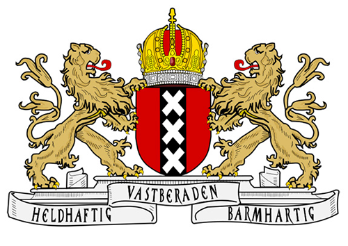
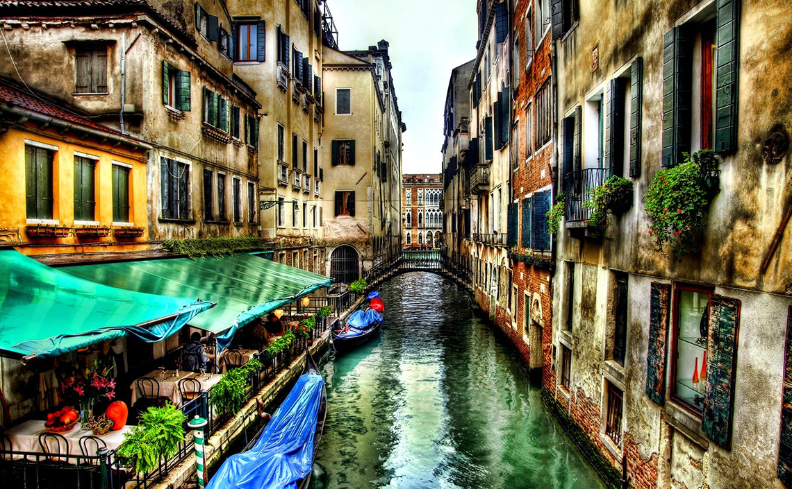

欧深思途
Toggle navigation
经典路线
德瑞捷奥
荷比卢
意，法
北极以南
北欧四国
冰岛
主题旅游
摄影
滑雪
试驾
蜜月
经典路线
德瑞捷奥
荷比卢
意，法

北极以南
北欧四国
冰岛
主题旅游
摄影
滑雪
试驾
蜜月
经典路线
经典路线 - 德瑞捷奥
新天鹅城堡是德国的象征，由于是迪斯尼城堡的原型，也有人叫白雪公主城堡。建于1869年。这座城堡是巴伐利亚国王路德维希二世的行宫之一。
经典路线 - 德瑞捷奥
经典路线 - 荷比卢
布鲁塞尔（法语：Bruxelles；荷兰语：Brussel）是比利时的首都和最大的城市，也是欧洲联盟的主要行政机构所在地，有欧洲的首都之称。
经典路线 - 荷比卢

经典路线 - 意法
威尼斯水上城市是文艺复兴的精华，世界上唯一没有汽车的城市，上帝将眼泪流在了这里，却让它更加晶莹和柔情，就好像一个漂浮在碧波上浪漫的梦。
经典路线 - 意法
北极以南
全部
冰岛
北欧四国
雷克雅未克，是冰岛首都和第一大城市。位于冰岛西南端的法克萨湾，离北极圈很近，它是世界最北边的首都。
雷克雅未克
哥本哈根曾被联合国人居署选为“最适合居住的城市”，并给予“最佳设计城市”的评价。丹麦全国重要的食品、造船、机械、电子等工业大多集中在这里，世界上许多重要的国际会议都在此召开。
哥本哈根
阿库雷里市还是一座有百年历史的港口，该港口于19世纪末期建成。由于海湾伸入内陆，加上两岸陡壁的屏障和得天独厚的优越条件，使这里成为一个风平浪静的天然良港。港口基本上不结冰，方便了水产品的出口，也是冰岛北部的重要贸易中心。
阿库雷里
奥斯陆，欧洲北部城市，位于挪威东南部，是挪威的首都和最大城市。1952年在奥斯陆曾经举办过冬季奥运会。
奥斯陆
斯德哥尔摩由于免受战争的破坏而保存良好，现在共有100多座博物馆和名胜，包括历史、民族、自然、美术等各个方面。斯德哥尔摩也是一个高科技的城市，拥有众多大学，工业发达。斯德哥尔摩也是瑞典的金融中心，瑞典主要的银行的总部都在这里。
斯德哥尔摩
在大海的衬托下，无论夏日海碧天蓝，还是冬季流冰遍浮，这座港口城市总是显得美丽洁净，被世人赞美为“波罗的海的女儿”。在赫尔辛基的海港市场上，有一尊名叫“波罗的海的女儿”的铜像，是赫尔辛基的象征。
赫尔辛基
主题旅游
摄影
滑雪
试驾
蜜月


{kind=link}
{kind=link}
{kind=link}